This webpage collected conference abstracts related to the United Imaging Healthcare uEXPLORER total-body PET scanner during its early deployment phase (2017–2022).
Quick Navigation
| Year | NSS/MIC | SNMMI | EANM | Other |
|---|---|---|---|---|
| 2022 | 👍 | ⏳ | ⏳ | 👉 |
| 2021 | 👍 | 👍 | 👍 | |
| 2020 | 👍 | 👍 | 👍 | |
| 2019 | 👍 | 👍 | ||
| 2018 | 👍 | 👍 | ||
| 2017 | 👍 | 👍 |
2022
2022 IEEE-NSS/MIC/RTSD Conference
This year's IEEE NSS/MIC/RTSD was held in Milano, Italy, from 5th to 12th November.
35th Annual Congress of the European Association of Nuclear Medicine
This year's EANM22 was held in Barcelona, Spain, from 15th to 19th November.
SNMMI 2022 Annual Meeting
This year's SNMMI 2022 Annual Meeting was held in Vancouver, Canada, from 11th to 14th June. The abstracts are published in JNM as a supplemental issue.
Highlight
- Optimization of imaging time for 18F-AV45 PET using SUVR in cognitive impairment with or without CAA by total-body dynamic PET/CT
- Total-body perfusion imaging using [11C]-butanol
- Total-body dynamic PET/CT imaging of 11C-Methionine in multiple myeloma
- Total-Body Imaging of CD8+ T Cells in Patients Recovering from COVID-19 -- A Pilot Study Using the uEXPLORER Total-Body PET
- Total-body PET/CT using half-dose 18F-FDG in pediatric malignancies
- An investigation of the “brain-GI” relationships in Parkinson's disease by imaging dopamine transporter in dynamic 11C-CFT total-body PET/CT
- Quantitative parametric imaging added diagnostic values in lesion detection of 68Ga-PSMA-11 in prostate cancer patients identified by dynamic total-body PET/CT
- Kernel SIME: simultaneous estimation of blood input function using a kernel method and its evaluation with total-body PET
- Real-time Motion Tracking for Total-body Molecular Imaging
- Improved Brain Amyloid Deposition Analysis in AD and CAA by Total-body Dynamic AV45 PET Imaging
- Diversifying the Subject Cohorts in Total-Body PET Research: A Feasibility Study
- A Novel Automatic Bone Metastasis Delineation Method for Total-body PET/CT
- Ultra-low-activity is feasible in FDG Total-body PET/CT: compared with low-activity FDG
- Impact of Equilibration Time (t*) on Patlak Quantitation in Dynamic Total-Body Imaging using the uEXPLORER PET Scanner
- Feasibility of standard and generalized Patlak Models for dynamic imaging of multiple organs using the uEXPLORER PET scanner
- Assessment of Compartmental models and delay estimation schemes for dynamic Total-body PET imaging using uEXPLORER
- Assessment of local and global input functions for total body [18F]-FDG Patlak imaging using uEXPLORER PET scanner
- Impact of Fit Time Interval on Patlak Quantitation in Dynamic Total-Body Imaging using the uEXPLORER PET Scanner
- Comparison between dual-time-window protocol with other simplified quantifications in dynamic total-body 18F-FDG PET imaging
- The feasibility study of the reduced scanning time on 11C-Methionine PET/CT imaging
- Y-90 PET dosimetry: a phantom study between the total-body and conventional PET
- Total-Body Positron-Emission Tomography Imaging of Vessel Wall Biology
- Total-body 18F-FDG PET Evaluation of Lymphoid Tissues Post Myocardial Infarction
- Dual-Energy CT Bone-Fraction Correction for Total-Body PET Kinetic Quantification of Bone Marrow
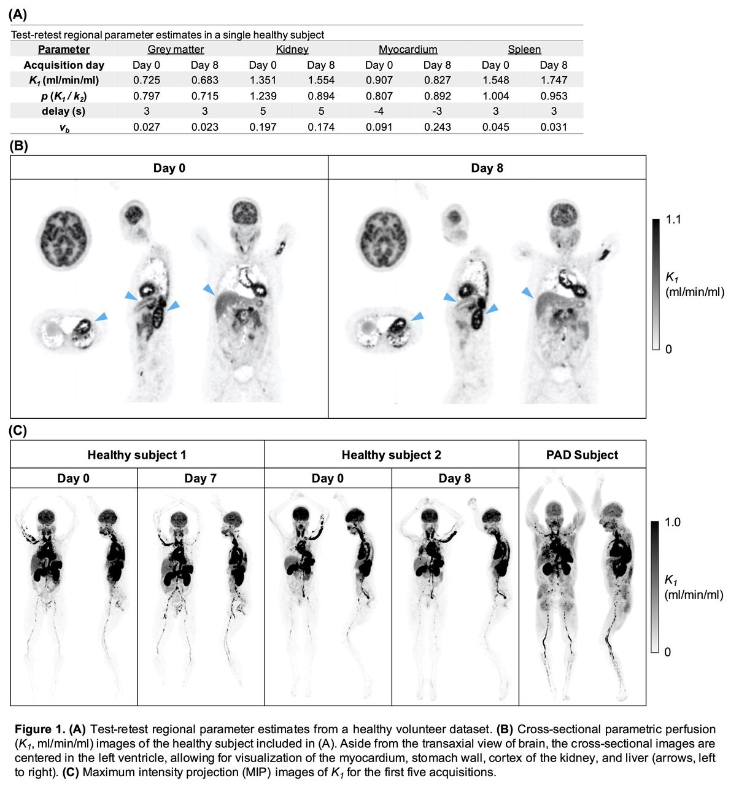
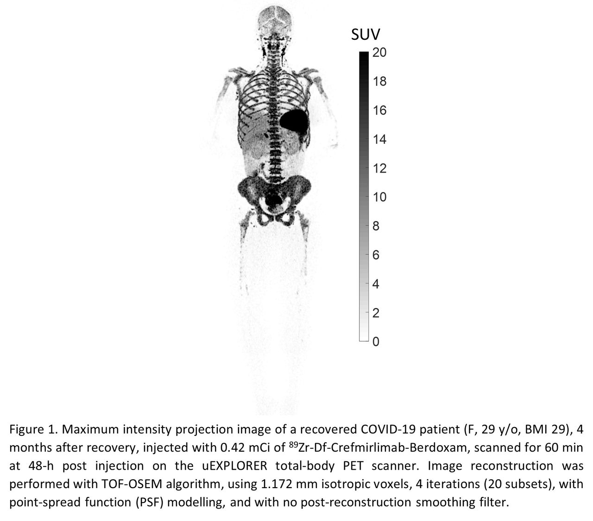
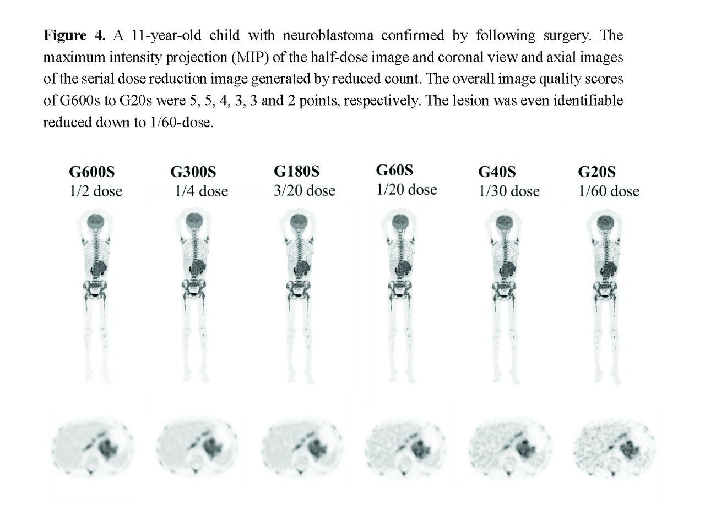
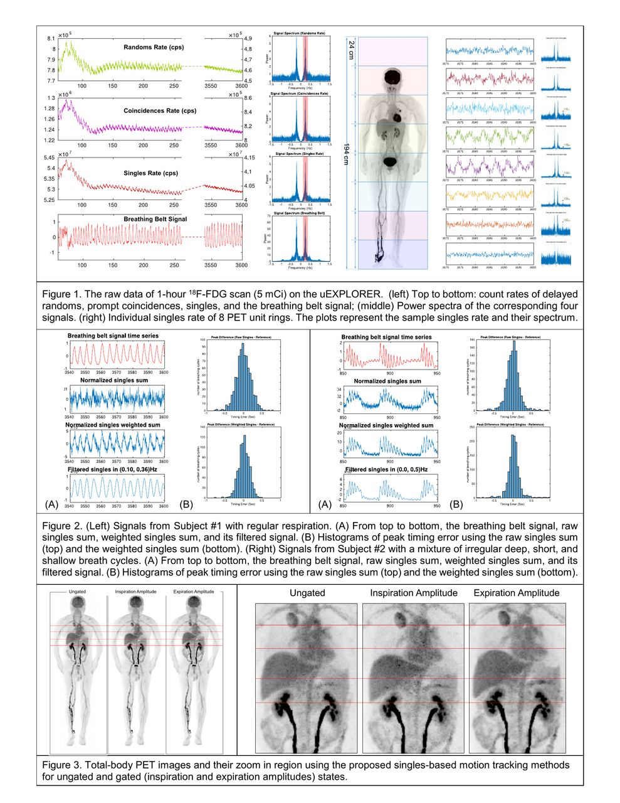
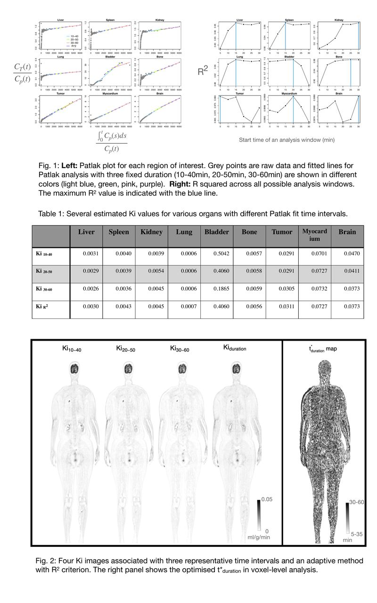
Other Conferences Held in 2022
- This year's 9th Conference on PET/MR and SPECT/MR & Total-body PET workshop was held in Isola d'Elba, Italy. The abstracts can be found here.
- In this year's International Society for Magnetic Resonance in Medicine annual meeting (ISMRM 2022), Improving image quality of ultralow-dose pediatric total-body PET/CT using deep learning technique was accepted.
- In this year's 64th Annual Meeting of the American Society for Radiation Oncology (2022 ASTRO), Metabolic and textural changes in the brain of lung cancer patients: A total-body PET/CT study was accepted as a poster.
- In this year's Chinese Conference on Pattern Recognition and Computer Vision (PRCV) (PRCV 2022), a workshop paper, Statistical Characteristics of 3-D PET Imaging: A Comparison Between Conventional and Total-Body PET Scanners was presented.
2021
34th Annual Congress of the European Association of Nuclear Medicine
This year's EANM21 was held online, from 20th to 23rd November. The meeting abstracts are published in EJNMMI.
Highlight
- OP-0568 Motion correction using multi-resolution scheme (MOTIONLESS) for 18F-FDG Total-body PET/CT systems
- OP-0569 ENHANCE-PET: Exploring the Human Functional Connectome Using Total-Body [18F]FDG-PET
2021 IEEE-NSS/MIC/RTSD Conference
This year's IEEE NSS/MIC/RTSD was held online and based in Yokohama, Japan, from 16th to 23rd October.
Interesting Programs
- M-10-07 - Motion correction using multi-resolution scheme (MOTIONLESS) for 18F-FDG
- M-05-065 - Design of the NeuroEXPLORER, a next-generation ultra-high performance human brain PET imager
- M-05-201 - Regularization parameter selection in image reconstruction for short-duration
- MO-03-05/M-06-330 - Sampling uEXPLORER Total-body PET Data to Mimic Altered Scanner Geometries
- M-06-070 - Monte Carlo Simulations of Flux Rates with the NeuroEXPLORER Design Geometry based on Total-body Human Imaging Data
- M-06-238 - Whole-body Patlak imaging with different axial FOV: a simulation study using uEXPLORER
- M-16-280 - CNN-based time delay estimation in dynamic total-body PET kinetic modeling
- WS-04-04/WS-04-07 - Total Body PET Reconstruction I/II
- SC-07-05 - Total-body PET kinetic modeling and parametric imaging / Established and emerging clinical applications
SNMMI 2021 Virtual Annual Meeting
This year's SNMMI 2021 Annual Meeting was held online and based in Washington D.C., from 11th to 15th June. The abstracts are published in JNM as a supplemental issue.
Highlight
- Total-Body PET Parametric Imaging with Cardiac Modulation
- Total-Body Parametric Reconstruction with Deep Learning-based Data-driven Motion Compensation
- Multi-Parametric Total-body Dynamic PET/CT imaging in Differential Diagnosis of Benign and Malignant Lymph Nodes
- Improved short-axies PET image quality via uEXPLORER total-body PET
- Clinical evaluation of regularized OSEM reconstruction algorithm in pediatric total-body 18F-FDG PET/CT
- Simulation of ultra-low dose 68Ga-FAPI total-body PET/CT imaging
- Internal dosimetry in F-18 FDG PET examinations based on long time measured organ activities using total-body PET/CT: dose it makes any difference from a short-time measurement
- The evaluation on the image quality of a total-body PET/CT imaging with an ultra-low injected dose
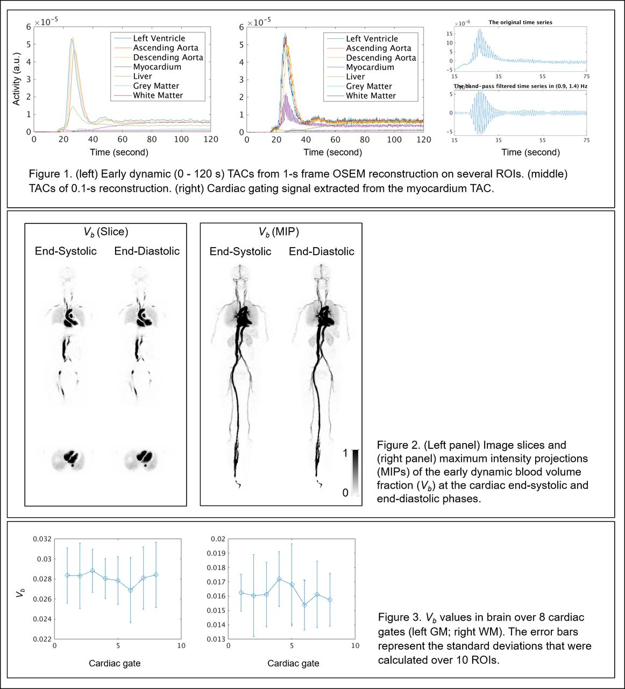
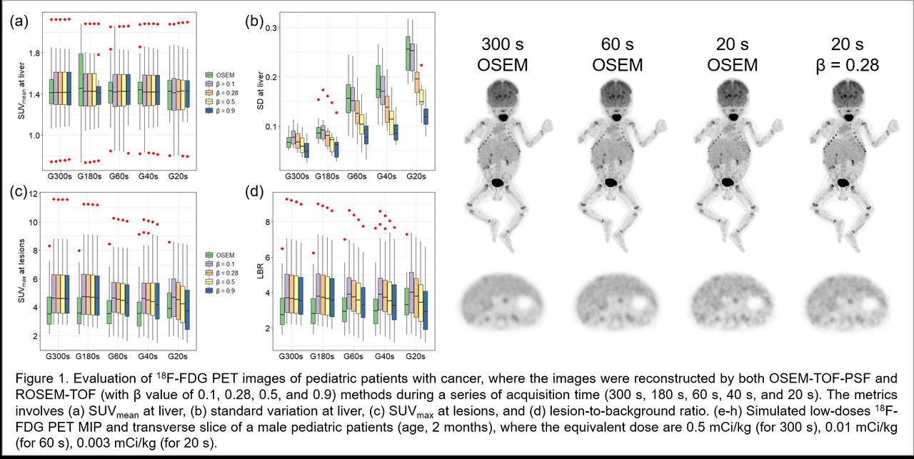
2020
2020 IEEE-NSS/MIC/RTSD Conference
This year's 2020 NSS-MIC was held online and based in Boston, USA, from 31st October to 7th November. The proceedings are published by IEEE.
Highlight
- Investigation of Spatial-Temporal Kernel Method for Dynamic Imaging in Short and Long Range PET Scanners
- Development and Validation of an Accurate Input Function from Carotid Arteries using the uEXPLORER
Interesting Programs
- M-04-06 - Quantitative Dynamic Total-Body PET Imaging
- M-09-05 - Effect of Time Delay and Dual Blood Input on Liver Kinetic Quantification Using High-Temporal Resolution Dynamic PET
- M-10-05 - Framework design for comprehensive patient motion compensation in total-body PET
- M-10-06 - Image domain deep scatter estimation for high-temporal resolution dynamic PET
- M-08-164 - Investigation of spatial-temporal kernel method for dynamic imaging in short and long range PET scanners
- M-15-297 - Spatial Resolution Assessment of PET Scanners with Iterative Image Reconstruction: A Study on the uEXPLORER Total-Body PET Scanner
- M-16-06 - Evaluation of quantitative accuracy in total-body PET
- M-17-03 - Comparison Between EXPLORER Total-body PET and Conventional PET Imaging of Y-90 Radioembolization: A Phantom and Clinical Study
- M-17-02 - Development and validation of an accurate input function from carotid arteries using the uEXPLORER
- M-17-01 - Pulse-timing methods for time delay estimation in dynamic total-body PET kinetic modeling
- M-18-04 - Characterization of Lutetium Background Radiation in the uEXPLORER Total-Body PET Scanner and Applications in Attenuation Correction
33rd Annual Congress of the European Association of Nuclear Medicine
This year's EANM20 was held online, from 20th to 23rd November. The meeting abstracts are published in EJNMMI.
Highlight
- EPS-049 Absorbed dose assessment in 90Y radioembolization patients with GATE: a comparison between total-body PET and conventional PET imaging
SNMMI 2020 Virtual Annual Meeting
This year's SNMMI 2020 Virtual Annual Meeting was held online and based in New Orleans, USA, from 11th to 14th June. The abstracts are published in JNM as a supplemental issue.
Highlight
- Effect of dual-input function and dispersion on lung FDG-PET kinetic quantification using the EXPLORER total-body PET/CT scanner
- Comparison of Linear and Non-linear Total-Body PET Parametric Imaging
- Multiphase Patlak Plot Enabled by High Temporal Resolution Total-body Dynamic PET
- Total-Body Dynamic PET of Metastatic Cancer: First Patient Results
- Total-body 18F-FDG PET/CT in patients with inflammatory arthritis: initial findings using the uEXPLORER system
- Data-driven respiratory gating for the uEXPLORER with fast dynamics
- First-in-human total-body PET imaging of HIV with 89Zr-VRC01 on the EXPLORER
- Alternate Methodology for Sensitivity Testing of a Total Body PET Scanner
- Comparative Analysis of Quality Control Tests of Traditional PET/CT scanner vs Total Body PET/CT Scanner
- Bolus Injection Technique for uEXPLORER 18F-FDG PET/CT Dynamic Scans
- Total Body PET Patient Positioning for Optimal Diagnostic and Research Scans
- Considerations for Positioning Arthritic Patients on the uExplorer Total-Body PET/CT System
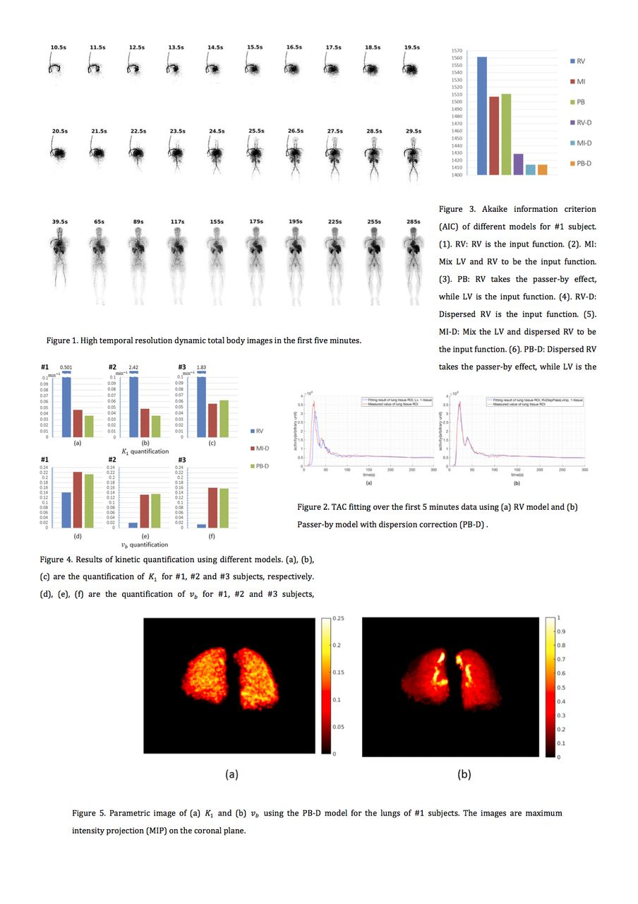
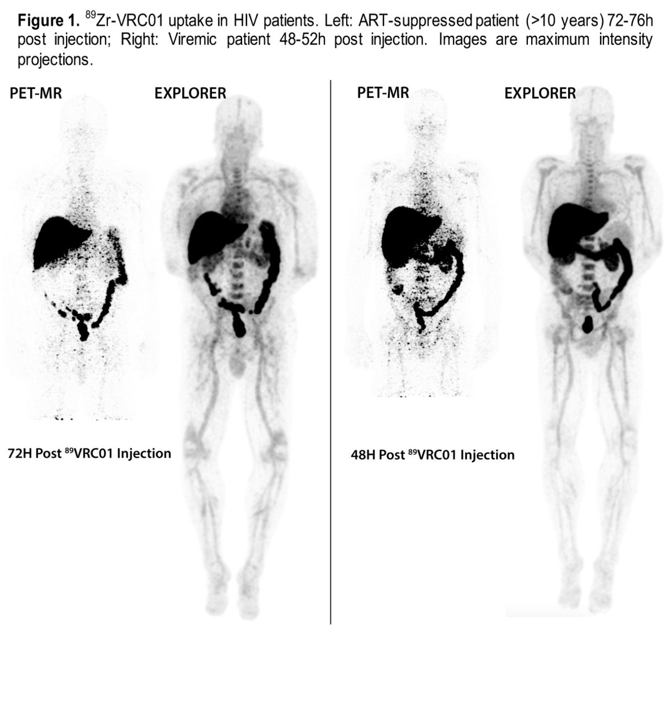
2019
2019 IEEE-NSS/MIC/RTSD Conference
This year's 2019 NSS-MIC was held in Manchester, UK, from 26th October to 2nd November. The proceedings are published by IEEE.
Highlight
- Preliminary investigation of the impact of Axial Ring Splitting on Image Quality for the Cost Reduction of Total-Body PET
- Data-driven Estimation of Crystal Efficiencies using Single Events
- The Effects of Delay on the Input Function for Early Dynamics in Total Body Parametric Imaging
Interesting Programs
- MP-3-01 EXPLORER Total Body PET: Progress, Challenges and Opportunities
- M-07-03 Performance evaluation of the EXPLORER total-body PET/CT scanner based on NEMA NU-2 2018 standard with additional tests for extended geometry
- M-07-06 Fast Dynamic Total-Body PET Imaging on EXPLORER
- M-12-06 The image quality evaluation with different number of units based on the first total-body uEXPLORER scanner
- MIC-19-05 Preliminary Trials of In Vitro Circulating Tumor Cell Cluster Tracking with the MiniEXPLORER II Total-Body PET/CT Scanner
- M-01-022 Time-of-flight estimation in a PET block detector using convolutional neural networks
- M-01-175 Development of the uEXPLORER singles acquisition framework
- M-01-283 Distributed Time Alignment Using L1-Norm Optimization for Total-body PET
- M-01-331 Data-driven Estimation of Crystal Efficiencies using Single Events
- M-06-275 Kinetic Modeling of Interstitial Space Using High-Temporal Resolution
SNMMI 2019 Annual Meeting
This year's SNMMI 2019 Annual Meeting was held in Anaheim, California, USA, from 22nd to 25th June. The abstracts are published in JNM as a supplemental issue.
Highlight
- Validation of scatter correction with Monte Carlo simulation for uEXPLORER
- Image Quality evaluation of analytic reconstruction algorithms for long axial field-of-view PET scanner
- A comparison of image quality with uMI780 and the first total-body uEXPLORER scanner
- The image quality evaluation with various maximum unit difference of the first total-body uEXPLORER scanner
- Total-Body Parametric Imaging using Kernel and Direct Reconstruction on the uEXPLORER
- Dead time correction method for long axial field-of-view, whole-body PET scanner
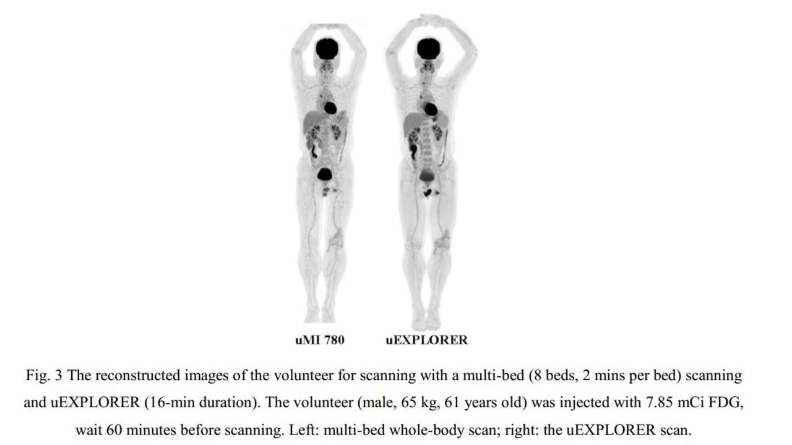
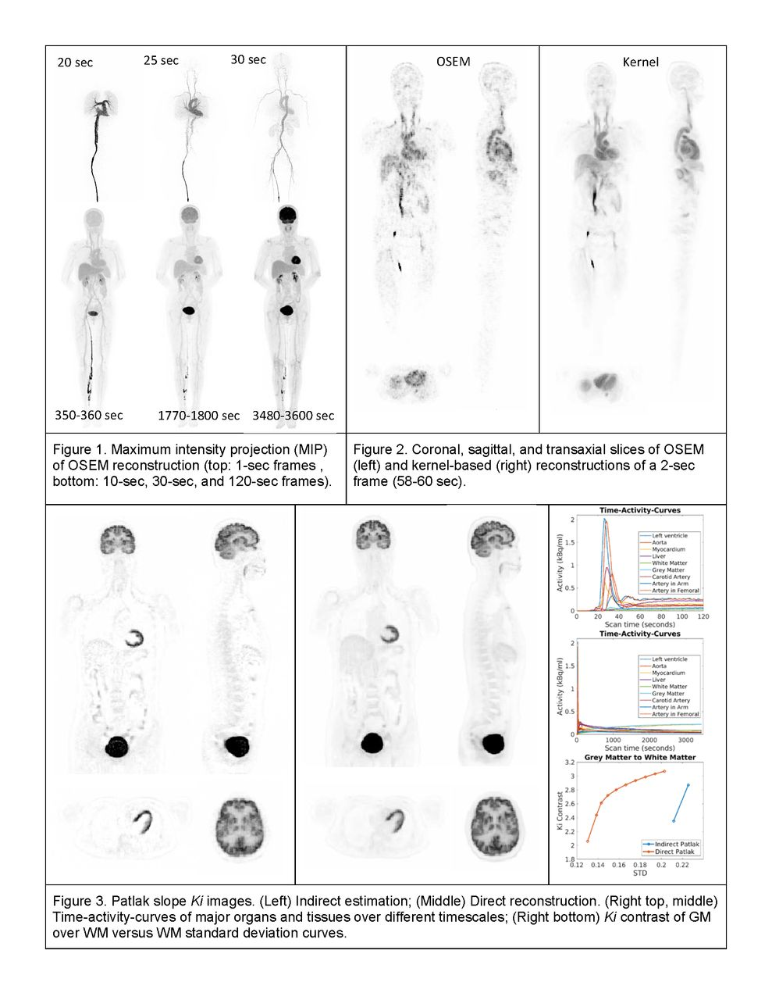
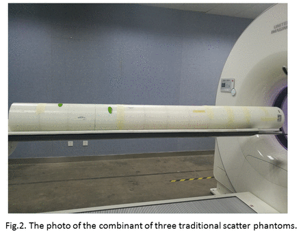
2018
2018 IEEE-NSS/MIC/RTSD Conference
This year's 2018 NSS-MIC was held in Sydney, Australia from 10th to 17th October. The proceedings are published by IEEE. This year featured the "Total-Body PET Imaging Workshop".
Highlight
- An Accurate Time Calibration Method with Phantom Position Correction for EXPLORER Scanner
- Multi-Resolution Imaging for Total-body PET
Interesting Programs
- M-03-055 - Comparison of Different Readout Methods of SiPM Array Coupled to LYSO Array for the Next Generation
- MIC-WS2 III-03 - Physical performance of the first total-body EXPLORER PET scanner and preclinical applications with mini-EXPLORER systems
SNMMI 2018 Annual Meeting
This year's SNMMI 2018 Annual Meeting was held in Philadelphia, USA, from 23rd to 26th June. The abstracts are published in JNM as a supplemental issue.
Highlight
- Progress on the EXPLORER project: towards a total body PET scanner for human imaging
- Imaging and quantification of 89Zr-labeled antibodies in rhesus monkeys up to 30 days post-injection using the mini-EXPLORER PET scanner
- Optical motion tracking for use with the EXPLORER total-body PET scanner
- Time-Varying Kinetic Modeling of High Temporal-Resolution Dynamic 18F-FDG PET Data for Multiparametric Imaging
- Comparison of Rotation-based and Non-rotation-based Projectors for Image reconstruction in Mini-EXPLORER II
- Development and Evaluation of Penalized Image Reconstruction for the Total-Body EXPLORER
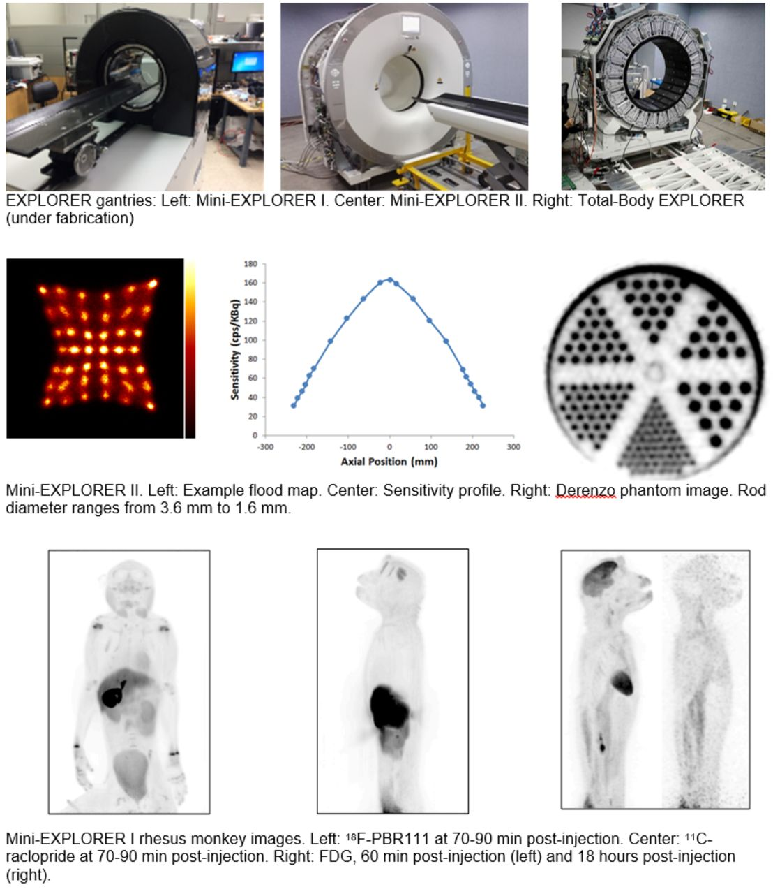
2017
2017 IEEE-NSS/MIC/RTSD Conference
This year's 2017 NSS-MIC was held in Atlanta, USA from 21st to 28th October. The proceedings are published by IEEE.
Interesting Programs
- M-14-1 - Benefit of Total-body PET Imaging: Effect of Time-of-Flight and Depth-of-Interaction on Quantification Performance This is the first time that I heard the concept of total-body PET.
SNMMI 2017 Annual Meeting
This year's SNMMI 2017 Annual Meeting was held in Denver, USA, from 10th to 14th June. The abstracts are published in JNM as a supplemental issue.